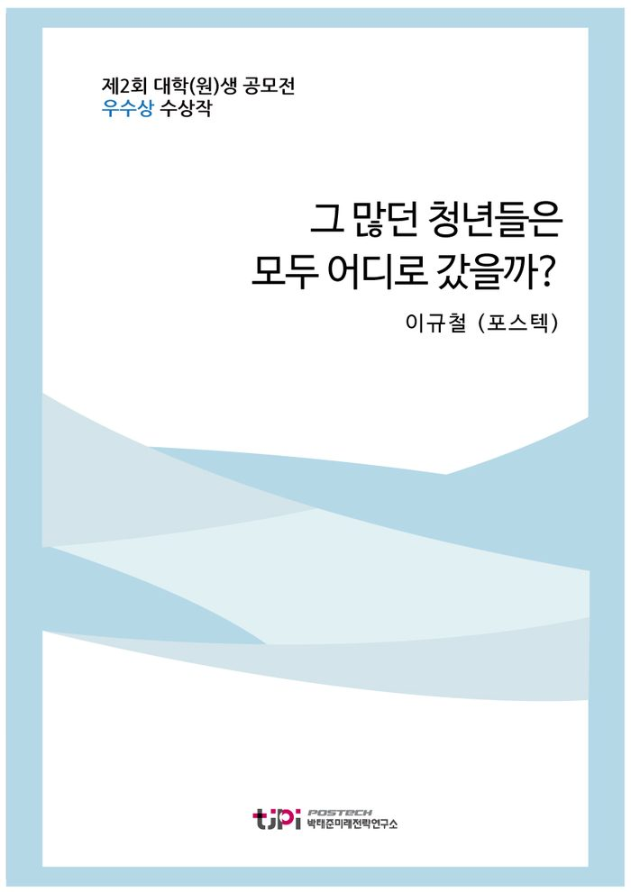

저자 이규철 (포스텍)연재일 2015-09-01

요 약
2015 대학(원)생 에세이 공모전 우수작
' 그 많던 청년들은 모두 어디로 갔을까? '
- 포스텍 이규철
본 에세이는 청년 세대들의 한국 탈출 현상의 실태와 그 원인을 짚어보고, PIGS 4개국의 사례를 통해 청년에게 버림받은 국가의 운명에 대해 알아보는 한편, 청년복지에 대한 적극적인 투자로 위기를 타개하고 경제 대국으로 올라선 독일과 브라질의 사례를 분석하여 위기 극복을 위해 대한민국이 나아가야 할 방향을 논의하고 있다.
------------------------------------------
박태준미래전략연구소에서는 전국 대학(원)생을 대상으로
「10년 내에
한국사회가 당면할
가장 중요한 이슈는?」
라는 주제로 공모전을 개최하였다.
국내 53개 대학을 비롯해 튀니지대학(튀니지), 튈버그대학(네덜란드), 하노이국립대(베트남) 등 해외대학에 유학하는 학생 등 57개 대학 138개팀 179명이 응모해 높은 호응도를 보였으며, 이중 대상 2편, 우수상 10편을 선정하였다.
목 차
I. 머리말
II. 청년 탈출 현상의 실태와 그 원인
1. 이민계를 만드는 청년들
2. 돌아오지 않는 고급 두뇌들
3. 우리 사회의 현주소 - 희망이 보이지 않는
대한민국
III. 남유럽 국가들의 청년 엑소더스
IV. 해결방안 - 독일과 브라질, 그리고 대한민국
1. 독일의 청년 복지 정책
2. 브라질의‘ 보우사 파밀리아’
3. 대한민국이 나아가야 할 방향
V. 맺음말 - 청년들에게 희망을 돌려주자.
내 용
[2015 청년 에세이 우수작] 그 많던 청년들은 모두 어디로 갔을까?
이규철 (포스텍)
I.
머리말
2015
일자 매일경제에서 흥미로운 기사를 하나 접할 수 있었다
‘“한국
떠날래요” 이민계 드는
20
대 청춘들’이란 제목의 기사는 삼삼오오 짝을 이루어 계를 만들어 이민을 위한
목돈을 마련하고
‘이민 스터디’를 통해 언어
현지 취업
정보 등의 지식을 공유하는
20
대들을 소개했다
처음에는
경쟁 만능의 한국 사회에서 낙오된 일부에 의한 현상일 것이라 생각했지만
얼마 후 접한 또 다른 기사에서
그러한 것이 아님을 알 수 있었다
. 4
18
일자 조선일보의
‘북유럽 가서 살겠다는
30
대들
...
전 직장 알아보니 삼성·
LG
많더라’에서는 앞선 기사와 같이 ‘이민계’를 조직하는 젊은 세대들을 소개하면서
이 현상의 특징 중 하나는 소위 명문대를 졸업해 대기업에서 근무하고 있던 사람들이 많은 것이라고 전했다
경쟁 낙오자가 아니라
번듯한 직장을 가진 사람들이 주도적으로 한국을
떠날 준비를 하고 있다는 것이다
이러한 ‘청년 탈출 현상’은 박사 학위 이상의 고급인력
집단에서도 관찰된다
. 2015
일자
etnews
의 ‘돌아오지 않는 두뇌들’에 따르면 미국에서 박사학위를
받은 한국인의
63%
가 한국으로 돌아오지 않을 계획이라고 한다
또한
스위스 국제경영개발원
(IMD)
에서 발표한 한국의 두뇌유출지수는
2013
년 기준
4.63
점으로 국가 경제에 부정적인 영향을 미친다고
여겨지는 상태인 것으로 드러났다
이쯤 되면 이 현상은 단순한 해프닝을 넘어서서
우리 사회에서 무엇인가 잘못되어 가고 있음을 암시한다
‘청년 탈출 현상’은 비단 우리나라만의 문제는 아니다
이미
걷잡을 수 없이 많은 수의 청년들이 해외로 빠져나가고 있는 국가들도 있다
‘유럽의 돼지들’이라 불리는
남유럽의 네 개 국가
포르투갈
이탈리아
그리스
스페인
(PIGS)
50%
에 육박하는 청년 실업률을 기록하고 있고
매년 수만
명의 청년들이 일자리를 찾아 조국을 떠난다
특히 포르투갈은
2011
년에
총 인구의
1%
에 해당하는
10
만 명의 사람들이 이민을 떠났다
청년층의 감소로 이들 국가에서는 경제 활력 감소
디플레이션 등
여러 문제점이 생기고 있지만
그 중 가장 우려스러운 점은 경제 재건을 이끌 젊은 인재들의 부족으로
반등의 기회가 오더라도 이를 잡지 못하고 영원히 도태될 가능성까지 존재한다는 점이다
반면에
1970
년대부터 착실히 청년층에 투자해온 독일은 주변국의 인재를 빨아들이는 블랙홀이 되어 유럽의 정치·경제적 리더로서
그 위용을 뽐내고 있고
브라질은 ‘보우사 파밀리아’라는 세계에 유례없는 대규모 복지정책을 통해 세계
위의 경제 대국으로 우뚝 일어섰다
우리나라의 ‘청년 탈출 현상’은 아직까지는 중요한 이슈로
다루어지지 않고 있다
하지만 적절히 대처하지 않는다면 예상보다 훨씬 빨리 성장하여
10
년 후 대한민국에 닥칠 큰 사회적 이슈 중 하나가 될 것이다
왜냐하면
현상의 중심에 서있는 오늘날의 청년들은 지금까지의 어느 세대들보다 어학실력이 뛰어나면서 외국 문화에 대한 거부감이 적고
무엇보다 인터넷을 통한 유행에 민감하기 때문이다
지금 이민계를
만든 사람들이 이민을 나가고 그 과정을 인터넷을 통해 공유하기 시작하면
젊은 층의 이민인구는 폭발적으로
증가할 것이다
그러므로 지금부터 ‘청년 탈출 현상’의 원인을 포착하여 해결 방안을 마련하려는 노력이
절실히 요구된다
본 글에서는 청년 세대들의 한국 탈출 현상의 실태와
그 원인을 짚어보고
, PIGS 4
개국의 사례를 통해 청년에게 버림받은 국가의 운명에 대해 알아볼 것이다
한편
청년복지에 대한 적극적인 투자로 위기를 타개하고 경제 대국으로
올라선 독일과 브라질의 사례를 분석하여 위기 극복을 위해 대한민국이 나아가야 할 방향을 논의해 보고자 한다
II.
청년 탈출 현상의 실태와 그 원인
1.
이민계를 만드는 청년들
앞서 소개한 기사들에서 알 수 있었듯이
‘이민계’를 만들어 함께 이민을 준비하는
2030
세대들의 수가
점점 증가하고 있다
이들이 공통적으로 희망하는 이민 국가는 ‘복지국가’로 알려진 덴마크
스웨덴 등 북유럽 국가들이다
실제로 외교통상부의 ‘재외동포현황’에
따르면 덴마크에 사는 재외동포의 수는
2011
293
명에서
2013
538
명으로
83.6%
증가하였다
이러한 북유럽 이민의 가장 두드러진 특징은 수요가 주로 ‘소위 명문대를 졸업하고
대기업에 다니는 젊은 세대’라는 점이다
조선일보 기사에 따르면 한 업계 관계자는 “북유럽 이민을 알아보고
떠나는 사람들의 전 직장을 알아보면 삼성전자가 가장 많고
LG
전자가 그 다음”이라고 말했다
해외로 이민을 떠나는 청년들의 절대적 숫자 자체는 크지
않기 때문에 이러한 청년 탈출 문제는 아직은 사회적으로 주목을 받는 이슈는 아니다
새로운 기회를 찾아
한국을 떠나는 이민자들은 과거에도 꾸준히 있어왔기 때문에 대수롭지 않게 여겨지는 모양새이다
하지만
이 현상은 두 가지 측면에서 과거와는 다른 양상을 드러낸다
첫 번째는 이민의 원인이 경제적인 이유가
아니라는 것이다
‘마크로밀엠브레인’에서 이민을 고려하고 있는 만
19∼59
성인 남녀
1,000
명을 대상으로 조사한 결과
복수응답
),
이민을 떠나려는 주된 이유로
한국사회의 지나치게 과열된 경쟁구조
(82.2%) ▲
자녀에게 더 나은 교육환경을 만들어주고 싶어서
(82%) ▲
점점
심해지는 소득불평등 구조
(78%) ▲
한국사회의 각박하고 여유 없는 삶
(76%)
등이 꼽혔다
다시 말해
각박하고 희망이 없는
한국에서의 삶에 지친 젊은 층들이 인간다운 삶을 되찾고
그러한 삶을 자식들에게 물려주기 위해 이민을
떠난다는 것이다
오정은
IOM
이민정책연구원 연구교육실장은
go
발뉴스’ 데일리 팟캐스트 ‘민동기의 뉴스박스’에서 “한국도 이전과 다르게 선진국 수준이 됐지만
어려워지고 발전 가능성이 막혀있어 우울해 하는 젊은이들이 탈출하듯 외국으로 나간다는 점에서 과거보다 심각한
문제”라고 진단했다
두 번째는 그러한 현상의 중심에
2030
젊은 세대들이 있다는 것이다
초등학교 이전부터 영어 수업을
받았고
대학에 와서도 토익 점수다
해외연수다 하여 영어와의
전쟁을 치러온 요즘의 젊은 세대들은 지금까지의 그 어느 세대보다 어학실력이 출중하고
외국 문화에 대한
거부감이 낮다
스스로가 마음만 먹으면 해외로 나갈 준비가 되어있는 것이다
무엇보다 이들은 인터넷을 통해 도는 유행에 상당히 민감하다
이민계를
통해 한국을 탈출한 첫 세대가 자신들의 경험
노하우 등을 인터넷을 통해 공유하게 되면
이에 자극 받아 해외로 떠나는 젊은 세대들이 어느 순간 폭발적으로 증가하게 될 것이고
아예 이민을 떠나는 것이 하나의 문화로 자리 잡을 가능성도 존재한다
. 100
여명의
고등학생들이 ‘학교 자율화’정책에 반대하며 시작했던 촛불문화제가
인터넷을 통해 확산되면서
개월 만에 전국적으로 수십만 명이 운집하는 대형 집회로 발전했던
2008
촛불 집회 사건이 이러한 가능성을 뒷받침한다
희망이 사라진 대한민국을 떠나려 하는
2030
젊은 세대들
하지만 소위 ‘
99%
를 먹여 살리는
1%
’의 고급 두뇌들의 유출현황을 보면 상황은
더욱 심각해진다
2.
돌아오지 않는 고급 두뇌들
2015
일자
etnews
의 기사 ‘돌아오지 않는 두뇌들’에 따르면
, 2007
년부터
2013
년까지 미국에서 박사학위를 받은 사람 중
62.9%
가 한국으로 돌아오지 않고 미국에 잔류할 계획이라고 밝혔다
같은
조사에서 일본인은
48.5%,
싱가포르인은
44.0%,
태국인은
27.8%
로 조사되었다
또한
한국연구재단의 통계에 따르면
외국 박사학위 취득 후 귀국을 위해
재단에 신고하는 사람의 수가
2003
1512
명에서
2009
1143
, 2012
836
명에 이어 지난해에는
283
명에 불과하여 큰 폭으로
감소하는 추세이다
우리나라의 두뇌 유출 정도는 다른 조사에서도 확인되는데
스위스 국제경영개발연구원
(IMD)
는 한국의 두뇌 유출 지수가
4.63
으로 조사됐다고 밝혔다
이 지수는
에 가까울수록 유출이 심해 국가경제에 피해가 심하고
반대로
10
에 가까울수록 인재가 고국에서 활동하여 경제에 도움이 됨을 의미한다
이는
조사대상이 된
60
개국 중
37
위에 해당하는 수치이지만
, 2012
년 당시 총 연구개발비용 세계
국내총생산 대비 연구개발비의 비중 세계
위인 사실을 감안하면 두뇌
유출이 상당한 수준으로 평가 받고 있다
이러한 두뇌 유출의 가장 큰 원인으로는 해외에 비해
열악한 국내의 연구 환경이 지적 받고 있지만
연구 외적인 요소도 큰 부분을 차지한다
한국과학기술기획평가원이 국내에서 일하는 이공계박사
1,478
명을
대상으로 조사한 결과
37.2%
가 해외 취업을 희망했는데 그 이유로는 ‘부족한 연구 환경’이
52.3%
로 가장 많았지만
‘자녀교육’
(14.0%),
‘외국 정착’
(7.8%)
등 비 연구적인 이유도 상당했다
국내 이공계 박사 중 최대
25%
가량은
연구 환경의 수준이 비슷해지더라도 자녀 교육을 생각하거나
외국에 정착했다면 한국으로 돌아오지 않을
계획이라는 의미이다
이러한 현상의 심층적 원인을 조사한 통계 자료는 존재하지
않지만
한국으로 돌아오지 않으려는 이들의 심정은 위에서 소개한 이민계를 만드는 청년들의 심정과 크게
다르지 않을 것이다
과열된 경쟁 구조와 열악한 노동 환경 속에서 더 나은 삶을 살 수 있다는 희망을
찾을 수가 없기에 한국으로 돌아오기를 거부하고 있다는 것이다
그렇다면 한국 사회는 어떤 모습을 하고
있기에 청년들에게 외면 받고 있는 것일까
3.
우리 사회의 현주소
희망이 보이지 않는 대한민국
우리나라 평균 대학 등록금은
666
천원이다
연세대
고려대 등 서울시내 유명 사립대로 가면 약
800
만원에 이른다
그렇게 비싸게 대학을 다니고 나면 남는 것은 빚
대학 졸업생
10
명 중
명은 빚을 안고 사회로 나오고
그 평균 부채는
1,321
만원에 달한다
사회에 나와도 일자리 구하기는 하늘의 별 따기이고
그나마 존재하는
일자리의 질은 최악 수준이다
. 2013
년 기준 청년 임금근로자
명은 고용을 보장받지 못하는 비 정규직이다
근로시간
역시
2013
OECD
통계에서 연
2,163
시간으로 세계
위로써
가장
낮은 수치를 보이는 네덜란드와 비교하면 하루 평균
5.5
시간을 더 일한 셈이 된다
하지만 네덜란드의 연간 국민소득은
47,633
달러로
, 24,328
달러인 우리나라에 비해
배 더 많다
한마디로 더 일하지만 더 못살고 있는 것이다
정말 운이 좋아 일자리를
구하고 수입이 생긴다고 해도 사랑하는 사람과 결혼하여 가정을 꾸리는 것은 더욱 어렵다
최근
년간 신혼부부의 평균 결혼비용 약
3,798
만원
그 중 집값만
6,835
만원이 넘는다
자녀
명당 양육비용은 대학졸업까지
억 원이 넘게 드는 것으로 조사되었다
억 소리 나는 수치에 결혼하지 못하는 커플
결혼하더라도 아이를
쉬이 낳지 못하는 부부들이 늘어가는 추세이다
통계에 잡힌 우리나라 청춘들의 삶은 너무나 고달프다
생존을 위한 경제적 부담 속에서 꿈을 꾸는 것은 사치가 되고
연애
결혼
육아를 포기하는 이른바 삼포세대가 된다
최근에는 취업과 내 집 마련을 포기한 오포
인간관계와 희망까지
포기한 칠포세대라는 용어까지 회자되고 있다
이런 상황 속에서 이들을 보듬고 지켜줘야 할 국가마저도
이들을 외면하고 있는 실정이다
뉴스타파의 박근혜 정부의 대선 공약 이행여부를 조사하는 ‘박근혜 공약
점검 프로젝트
약속
’에 따르면
최저임금 인상
고용안정 및 정리해고 요건강화
비 정규직 근로자 사회보험 적용 확대
근로시간 단축 및 일자리
나누기 동반성장 전략 추진
소득연계맞춤형 반값 등록금 지원
여성
출산휴가와 육아휴직 확대 등 젊은 세대들의 고충을 해결해줄 수 있는 수많은 공약들이 ‘축소후퇴’되거나 ‘미이행’ 상태이다
사랑하는 사람과 가정을 꾸리고 아이를 낳아 기르는
극히 자연스러운
인간적인 욕구마저 억압당하는 사회 속에서
국가의 도움마저도 바라기 힘든 청년들은 마지막 선택으로 한국을
떠나려 하고 있는 것이다
청년들이 떠난 사회는 어떤 모습일까
유럽의 돼지들이라 불리는 남유럽의 네 개 국가들
포르투갈
이탈리아
그리스
스페인
(PIGS)
의 현 상황에서 그에 대한 힌트를 얻을 수 있다
III.
남유럽 국가들의 청년 엑소더스
PIGS 4
개국은 공통적으로 고실업
고부채
저성장의
중고에
시달리고 있다
특히 그리스는
2008
년 외환위기를 극복하지
못하고 유로존 탈퇴까지 고려하고 있는 상황이고
이탈리아는
연속 마이너스 성장을 기록하고 있다
이들 국가에서 벌어지는 현상들 중 가장 위협적인 것은 압도적인
청년 실업률과 이에 따른 청년 탈출 러시이다
. 2014
년 기준 스페인의 청년실업률은
53.8%
를 기록했고
그리스와 이탈리아 역시 청년실업률이
40%
를 넘어섰다
. 15∼24
세 인구 중 학교에 다니지 않고 구직 활동을
하는 젊은이
명 중
명이 실업자란 뜻이다
그럼에도 불구하고 정치권은 유권자의 다수를 차지하고 있는 중년·노년층을 위한 포퓰리즘 복지정책에만 매달렸고
반대급부로 실업난에 허덕이는 젊은 층에 대한 청년 복지는 외면되어 왔다
이에
희망을 잃은 이 나라 청년들은 조국을 버리고 다른 나라로 일자리를 찾아 떠나는 실정이다
포르투갈에서는
2011
당시 인구의
1%
에 해당하는
10
만 명이 일자리를 찾아 브라질
앙골라 등으로 떠났다
과거 기회의 땅으로 불리며
2008
년까지 매년 평균
50∼60
만 명의 외국인들이 일자리를 찾아
왔던 스페인은
1990
년 이후
20
여 년 만에 처음으로 이민을
나간 사람의 수가 국내로 들어온 사람들의 수를 추월했다
그리스에서 독일로 이민을 떠나는 사람들은 매년
수만 명을 웃돌고 있고
이탈리아 역시 해마다
만 명의
청년들이 일자리를 찾아 해외로 탈출하고 있다
청년 인구의 유출은 국가 경제에 직격탄이 된다
우선 소비자가 사라지면서 국가 경제를 뒷받침하는 부동산 시장
자동차
시장 등이 붕괴된다
또한 전자제품 등 새로운 물건에 대한 수요가 줄어들면서 기업들 역시 새로운 것에
대한 투자를 줄이게 되고
이로 인해 전체 경제의 혁신이 둔화되어 국가의 산업경쟁력 저하로 이어지게
된다
한편
청년들이 없으니 신생아 수 역시 급감하게 되어
국가의 미래마저 불투명하게 만들고
세금을 내는 사람이 없으니 연금으로 살아가는 노년층의 삶마저 위협받게
된다
하지만 이들보다 더 큰 문제는 청년자원의 유실이다
미국
워싱턴의 정책연구기관인 이민정책연구소
(MPI)
Demetrios
G. Papademetriou
대표는 “유럽 경제의 여건이 나아졌을 때 도약을 주도할 핵심 인재들이 유출되고 있다”고 지적했다
경제 재건을 책임질 수많은 젊은 인재들이 떠나는 바람에 훗날
경제 회복의 기회가 오더라도 그 기회를 잡지 못하고 영원히 도태될 가능성이 존재한다는 것이다
PIGS
의 상황은 한국의 그것과 닮은 점이 많다
극악의 취업난에 따른 높은 청년 실업률
취직이 되더라도 절반 가까이는
비 정규직에 머무를 수밖에 없는 열악한 고용환경
이에 반해 청년들을 위한 복지 정책은 부족하기만 하다
이러한 현실을 방관하기만 한다면 우리 청년들이 대한민국을 대규모로 탈출하는 날이 오지 않으리라는 법은 없다
그날이 온다면 대한민국은 단순한 위기상황을 넘어 ‘회복’을 논할 수 없을 정도의 파국을 맞게 될 것이다
IV.
해결방안
독일과 브라질
그리고 대한민국
1.
독일의 청년 복지 정책
초 고령화 사회란 전체 인구 중
65
세 이상 고령인구 비율이
20%
이상인 사회를 의미한다
전세계에서 이러한 초 고령화 사회에 진입한 국가가 세 개가 있는데 이탈리아
일본
그리고 독일이다
같은 상황에 처해 있는
세 국가이지만
이탈리아는 앞서 살펴본 바와 같이 절체절명의 위기상황이고
일본 역시 ‘잃어버린
20
년’을 겪으면서 좀처럼 경제가 위기에서
벗어나지 못하고 있는 반면
독일은 유럽연합의 정치적·경제적 리더로서 활약하고 있다
같은 위기를 맞았던 세 국가가 이리도 다른 결과를 낳은
원인은 청년 복지 정책에 대한 차이에서 찾아볼 수 있다
사회가 지속적으로 고령화되고 경제가 침체되기
시작했을 때
이탈리아는 유권자의 대다수를 차지했던 중 장년층의 표를 의식한 정치권은 노인 복지 강화에만
힘을 쏟았다
숱한 추문을 남겼던 베를루스코니 총리가
10
년간
집권할 수 있었던 데에는 ‘연금 인상’ 구호가 적중했었다
한편
일본은
대형 건설 경기 부양을 통한 위기극복을 시도했지만
경제는 오히려 침체기로 빠져들었고
당시 건설했던 하마다 마린 대교는 ‘갈 곳 없는 다리’라는 별명을 얻으며 실패한 정책의 상징이 되었다
반면에 독일은 고령화 사회가 시작되던
1970
년대부터 청년에 대한 투자를 확대하기 시작했다
독일에서는 최장
25
세까지 모든 어린이와 청년들에게 우리 돈으로
20
만 원
가량의 ‘아동수당’이 지급된다
대학 등록금은 공짜이고
학교를
졸업한 후 곧바로 직장을 찾지 못하더라도 실업수당을 받게 된다
우리나라에서 시도했다면 ‘경제를 거덜
낼 포퓰리즘 복지정책’이라며 맹비난을 받았을 이 청년 복지 정책은 초 고령화 사회로 접어든 독일 경제를 든든하게 지켜주는 파수꾼 역할을 하였다
이 정책에 의해 독일의 청년들은 탄탄한 경제적 기반을 쌓을 수 있었고
이로부터
노인 연금 강화
부동산 시장 안정 등 전반적인 사회 안정을 도모할 수 있었다
2011
년 기준으로 독일의 고용시장은 완전고용 상태를 넘어
일자리에 비해 오히려 사람이 부족한 상황이다
그 해
우르줄라 폰 데어 라이엔 독일 노동부 장관은 “독일은
50
만 개의 일자리를 채울 인력이 필요하기 때문에
다른 국가의 고급 인재를 더 많이 받아들이고 싶다”라고 밝힐 정도였다
이에 따라 일자리를 찾지 못한
PIGS 4
개국의 청년들은 물론이고 영국과 프랑스 등에서도 많은 수의 청년들이 독일로 발걸음을 옮기는
추세이다
주변국의 젊은 인재들을 블랙홀처럼 빨아들이고 있는 독일은 미래를 이끌어갈 청년 자원 경쟁력에서
다른 나라들을 월등히 앞서고 있다
2.
브라질의 ‘보우사 파밀리아’
브라질 역사상 가장 훌륭한 대통령으로 손꼽히는 이나시우
룰라 다 시우바 대통령의 대표적인 복지정책 ‘보우사 파밀리아
(Bolsa Familia,
가족지원금
’는 브라질의 모든 저소득층 가구에게 가정형편과 자녀 수에 따라 한 달에
22∼200
헤알
1∼10
만원
정도를
생활비로 지급하는 정책이었다
폴 울포위츠 전 세계은행 총재가 “효과적 사회정책의 모범”이라 칭했던
이 정책은 브라질 가구의
25%
이상을 지원하는 세계 최대의 복지정책이다
이 제도의 혜택을 받기 위한 조건이 큰 특징인데
반드시 자녀에게
예방접종을 시키고
학교에 보내야 했으며
만약 자녀의 결석률이
15%
가 넘으면 수당 지급을 중단했다
이는 저소득층의 문맹과
질병을 퇴치하고
아동노동을 몰아냈으며
무엇보다 가난의
대물림을 끊는데 결정적인 역할을 하였다
더욱이 소비 여력이 확대된 빈곤층과 중산층의 증가는 내수 시장의
활성화로 이어져 경제의 선순환 구조를 강화하였다
그 결과 그가 집권한
년간 실업률은
12%
에서
7%
대로
경제성장률은
2.7%
에서
7.5%
국가부채규모는
GDP
대비
50%
육박하는 위태로운 상황에서
18%
경제규모는 세계
12
위에서
위까지 치솟았다
‘보우사 파밀리아’의 핵심은
10
대·
20
대 젊은 세대들에게 ‘나도 가난에서 벗어날 수 있다’는 희망을 주는 것이었다
정부의 보호 아래 열심히 노력했던 이들은 이제 어엿한 중산층이 되어 브라질 경제의 든든한 버팀목이 되고 있다
한때 월가 등지로부터 ‘브라질 경제를 나락으로 떨어뜨릴 포퓰리즘 정책’이라는 맹비난을 받았던 이 정책은 정반대로
브라질 경제 전체의 파이를 키우는 놀라운 기적을 만들어 내었다
3.
대한민국이 나아가야 할 방향
지금까지 여러 국가들의 예에서 청년을 외면한 국가들이
어디까지 추락할 수 있는지
반대로 청년을 보듬은 국가들이 어디까지 부강해질 수 있는지 살펴보았다
그렇다면 청년들이 조금씩 떠날 조짐을 보이고 있는 우리 사회가 나아가야 할 방향
노력을 기울여야 할 곳은 자명하다
청년복지의 확충을 통해 젊은
인재의 유출을 막고 청년 자원 확보에 힘을 쏟아야 한다
청년복지가 ‘비용’이 아닌 ‘투자’임을 깨닫고
그들을 위한 정책 실현과 사회적 분위기 조성을 통해 청년들이 살고 싶어 하는 나라
청년들이 희망을 꿈꿀 수 있는 사회를 만들어나가야 한다
청년 복지를 주장하는 목소리에는 항상 다음과 같은 비판이
따라붙는다
독일·브라질만큼 청년에 투자한다면 국가의 복지 부담이 커져서 감당하기 어려우므로 국가 경제가
더 성장할 때까지 기다려야 한다는 비판이다
이러한 비판을 가하는 사람들은 다음의 두 가지 사례가 전하는
메시지를 잘 살펴볼 필요가 있다
첫 번째로
독일이 위와
같은 청년복지 투자를 시작한
1970
년대에
당시 독일
인당 국내총생산은 현재 우리나라의
1/10
수준인
천 달러에 불과했다
국가 경제의 수준은 청년복지 투자의 시점을 결정하는데
큰 영향이 없음을 나타낸다
두 번째로
, 2009
년을 기준
독일과 이탈리아의 국내총생산 대비 공공복지지출은
27.8%
로 똑같았는데
결국 같은 비용을 지출하고도 한 국가는 청년 세대에 투자하여 현재 세계적인 경제 대국으로 일어섰고
다른 한 국가는 청년을 외면한 채 포퓰리즘적인 복지정책만 남발하다가 국가의 미래까지 위협받는 상황에 몰리게
되었다
이 두 가지 사례가 전하는 메시지는 청년에 대한 투자는 ‘할 수 있는가
없는가’의 문제가 아니라 ‘할 것인가
말 것인가’의 문제
의지의 문제라는 것이다
우리
사회가 청년 문제를 중요한 문제로 인식하고 이를 해결하기 위한 의지를 보인다면
대한민국은 다시 한
번 청년들과 함께 할 수 있는 사회가 될 것이다
V.
맺음말
청년들에게 희망을 돌려주자
이민계를 만들어 한국을 떠나려 하는
2030
세대들과
한국으로 돌아오지 않으려 하는 박사학위 이상의 고급인력들의
증가로 인해 주목 받기 시작한 ‘청년 탈출 현상’은 사회적 이슈로서는 이제 막 심지에 불이 붙은 폭탄과도 같다
폭발이 임박한 다른 폭탄들 때문에 아직은 주목 받지 못하고 있다
하지만 ‘탈출’의 주원인이
한국 사회에서는 더 이상 희망을 찾을 수 없다는 것인 점과
그 중심에 어학실력이 출중하고 외국 문화에
익숙하며 유행에 민감한 청년 세대들이 있다는 점에서
이 폭탄의 심지는 그 무엇보다 빠르게 타 들어갈
것이다
또한
이 문제는 경제 위기의 수준을 넘어 후진국가로
도태될 위험성까지 내포하고 있기 때문에 터지게 된다면 그 무엇보다 큰 파괴력을 가지게 될 것이다
따라서
제 때에 적절한 대책을 마련하지 못한다면 이 문제는 ‘
10
년 후 대한민국이 당면할 가장 큰 사회적 이슈’가
될 것이다
해답은 이미 나와 있다
청년들에게 희망을 돌려주어야 한다
독일과 브라질의 청년 복지에
대한 과감한 투자를 본받아야 하고
높은 청년 실업률에도 대책 없이 청년들을 방치한
PIGS 4
개국을 타산지석으로 삼아야 한다
청년들을 위한 복지정책을
마련하여 꾸준히 추진해 나간다면 효과적으로 폭탄 심지의 불을 끌 수 있을 것이다
‘복지를 위해서는
경제 성장이 선결되어야 한다’는 주장은 타당하지 않다
오히려 청년복지는 경제 성장의 선순환 구조를
작동시키는 열쇠로서 고수익이 보장되는
경제 성장에 가장 유효한 ‘투자’이다
‘성장이 먼저냐
복지가 먼저냐’의 담론에 사로잡혀 청년복지를 머뭇거린다면
우리 사회는 이미 갖고 있던 파이마저 잃어버린 채 도태되고 말 것이다